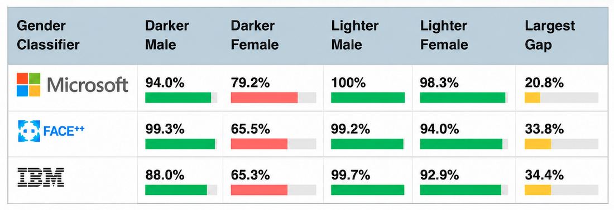
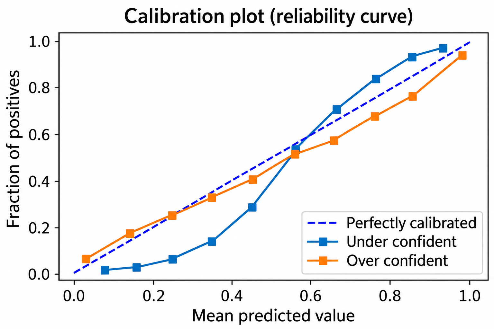

Module 2: Robustness Beyond the Development Distribution
What happens when the predictor is fixed after development, but the deployment conditions change? The first note in this module established an assurance for generalization about population risk under a fixed distribution \(S\). The previous note then examined how selection shapes the predictor using an ordering system as a working example. In this note, we will continue referring to that example and begin to distinguish changes in deployment conditions from predictor selection.
Empirical risk minimization has a source distribution \(S\) and then produces a predictor \(\hat \theta\) with some risk \(R_{S}(\hat \theta).\) When the development distribution shifts \(S \to S'\) at deployment, evaluation on \(S\) does not automatically support claims under \(S'.\) Write \(R_{S'}\) for population risk under deployment distribution \(S'\). When we are uncertain about the development distribution shift we can specify a family \(\mathcal{U}\) of shifts and a target threshold \(\tau\) to create a requirement:
This says that for all potential shifts in the uncertainty family, the shifted risk is no larger than \(\tau\). The rest of this note motivates this requirement and examines what evidence would support the resulting assurance claim, given a specified loss, threshold, and uncertainty family.
Distribution shift and robust optimization
First, a distribution shift doesn't necessarily cause failure. Suppose the labeler population changes only in the proportions of fixed groups, while the within-group distributions remain unchanged. In this case, only group prevalence or weighting changes; the examples are in the support of the source distribution. In the ordering example, groups could instead represent food-comparison categories.
Indeed, distributionally robust optimization (DRO) simply selects for worst-case performance over a specified family:
This is why the specification of the uncertainty set is the main conceptual move. Specifying \(\mathcal U\) defines which changes a robustness claim covers; it does not demonstrate consequential underspecification: a pipeline returning validation-equivalent predictors with different relevant behavior.
Suppose the distribution was split into \(m\) groups and let \(S_g\) be fixed within-group distributions. If \(\mathcal{U}_{\text{group}}\) consists of all mixtures of these distributions,
then, because expected loss is linear in the mixture weights,
This shows that stratified evaluation, previously discussed as a way to test for consequential underspecification, is connected to group DRO. Stratified evaluation estimates group performance; group DRO uses group losses as a way to select a predictor. This doesn't make specifying groups easier and small-group estimation remains difficult. However, the mixture identity does introduce a conditional formal assurance: if simultaneously valid upper bounds establish \(R_{S_g}(\hat\theta)\le\tau\) for every group, the requirement holds for every mixture in \(\mathcal U_{\mathrm{group}}\).
Example: "Gender Shades" - group-based disparities
Group stratified risk is a useful way to disaggregate performance and reveal consequential subgroup differences. Buolamwini and Gebru's Gender Shades evaluated commercial gender classifiers on facial images, reporting performance on subgroups defined jointly by gender and skin type [1]. They found large accuracy gaps across these subgroups.

Other studies have found more disparities ranging from bias in tools for detecting machine-generated text against non-native English writers to artificial intelligence (AI) decisions based on dialect [2], [3]. Liang et al. found that tested detectors frequently misclassify human-written content from non-native English writers as AI-generated [3]. Hofmann et al. has documented dialect prejudice in studied language models, including discriminatory hypothetical decisions [2].
These are all examples of different tasks and populations; non-native writing and dialect are not interchangeable. The important distinction, however, is that these evaluations do not establish that disparities are from a deployment shift. Once again, the safety analysis must specify the controller's use of affected predictions and which harm scenario they could influence.
Adversarial inputs
Adversarial transformations are another way to specify changed conditions. One common model allows an adversary to change individual instances, potentially using knowledge of the predictor. Let \(x\) denote the complete predictor input—the full comparison in the food example—and \(y\) be the label. For continuous inputs, consider a perturbed input \(\tilde x = x + \eta\) where \(\Vert \eta \Vert_{\infty} \le \epsilon\), which allows each coordinate in the input to vary by up to \(\epsilon\) in the domain. Specify permitted transformations and whether they preserve the intended label; a small feature-space norm does not itself establish label preservation.
This adversary seems weak; if \(\epsilon\) is small it seems intuitive they have limited ability to perturb the predicted labels. However, this turns out not to be true for many simple predictors. Goodfellow et al.'s work on this provides one explanation in terms of accumulated change [4]. They consider a linear predictor \(w\) that generates decisions according to \(\text{sign}(w^T x)\), the sign of the dot product between the weights of the predictor and the input. When this predictor encounters an adversarial example the inner-product becomes:
The adversary is able to do more than create noise or reweight subgroups. They can manufacture a tailored perturbation based on the predictor such as:
Suppose \(w\) has \(n\) features and is normalized so that \(\Vert w \Vert_{\infty} = 1\). Then the inner product grows by
For \(\epsilon>0\), the last bound is an equality only when every coordinate has magnitude one.
An adversary perturbing the input to a linear predictor can change the inner-product by an amount that depends on the weight magnitudes, not the number of input features alone.
Whether the adversary can switch the class of particular instances also depends on the margin. For a correctly classified example with \(y\in\{-1,+1\}\), the perturbation \(\eta=-y\,\epsilon\,\text{sign}(w)\) reduces the signed margin by \(\epsilon\Vert w\Vert_1\). Every perturbation satisfying \(\Vert\eta\Vert_\infty\le\epsilon\) obeys
Thus \(y\,w^T x>\epsilon\Vert w\Vert_1\) guarantees unchanged classification for this linear predictor and perturbation set; continued correctness also requires label preservation.
These allowed adversarial transformations induce a particular family of shifted distributions. This can also be extended to other settings, such as text where one could reformulate this to use permitted edits rather than feature / pixel based norms. The crucial point of interest here is that unsuccessful testing does not certify robustness: failure to find an attack does not cover every permitted perturbation.
In a photograph-based ordering system, permitted edits might change image presentation while preserving the food, freshness, and customer's intended choice. A successful attack can contribute to the unsafe-submission scenario introduced in the first note of the module. Its deployment feasibility and whether feedback or confirmation prevents an unwanted charge require separate evidence.
Calibration under changed conditions
Suppose the ordering rule is adjusted. Now it automatically submits orders only when confidence in the selected alternative exceeds a threshold, and otherwise requires customer confirmation before nonrefundable commitment.
What evidence would justify this rule? First check calibration under the relevant distribution, then whether the rule meets its requirement. Recall the Bradley-Terry model, or any general predictor, that gives outputs to be interpreted as comparison probabilities. For a reported probability \(\hat p(X)\) of label \(+1\), calibration under \(S\) means
It is possible to plot a reliability diagram which compares reported probabilities with actual observed frequencies; here a one-to-one linear trend is ideal.

There are caveats. Calibration is a distribution-relative notion distinct from classification or shift detection. Ironically, a predictor that only detects the subgroup and outputs the base-rate can be perfectly calibrated without distinguishing cases.
Calibration is not itself a method for detecting distribution shift. Ovadia et al. further investigate these distinctions by testing if in-distribution calibration survives distribution shift [5]. They find this often is not the case under the shifts they study. This limits the assurance supported by an in-distribution calibration observation.
Returning to the proposed ordering flow, we might evaluate prediction error among automatically submitted orders faithful to the anticipated conditions. Calibration can be measured using confirmation from the witheld low confidence predictions. However, this data is still naturally incomplete because high-confidence predictions are less likely to trigger confirmation. Finally, even perfectly calibrated probabilities does not fix an issue with the ordering rule.
Conclusions
Performance across distribution shifts, resistance to specified adversarial transformations, and calibrated probabilities are different model-level requirements. Each can inform the predictor's contribution to the ordering harm scenario and help identify assurance requirements.
The resulting proposed intervention should identify which causal step it changes and what evidence establishes that change. Improving the predictor, restricting admissible inputs, and requiring confirmation are interventions on different parts of the system.
Finally, picking a population, uncertainty set, subgroups, labels, or permitted transformations is specification work. The next note will examine how data collection, curation, labeling, and documentation encode these choices.
References
[1] Buolamwini, Joy, and Timnit Gebru. "Gender shades: Intersectional accuracy disparities in commercial gender classification." Conference on fairness, accountability and transparency. Proceedings of Machine Learning Research (PMLR), 2018.
[2] Hofmann, Valentin, et al. "AI generates covertly racist decisions about people based on their dialect." Nature 633.8028 (2024): 147-154.
[3] Liang, Weixin, et al. "GPT detectors are biased against non-native English writers." Patterns 4.7 (2023).
[4] Goodfellow, Ian J., Jonathon Shlens, and Christian Szegedy. "Explaining and harnessing adversarial examples." arXiv preprint arXiv:1412.6572 (2014).
[5] Ovadia, Yaniv, et al. "Can you trust your model's uncertainty? Evaluating predictive uncertainty under dataset shift." Advances in neural information processing systems 32 (2019).